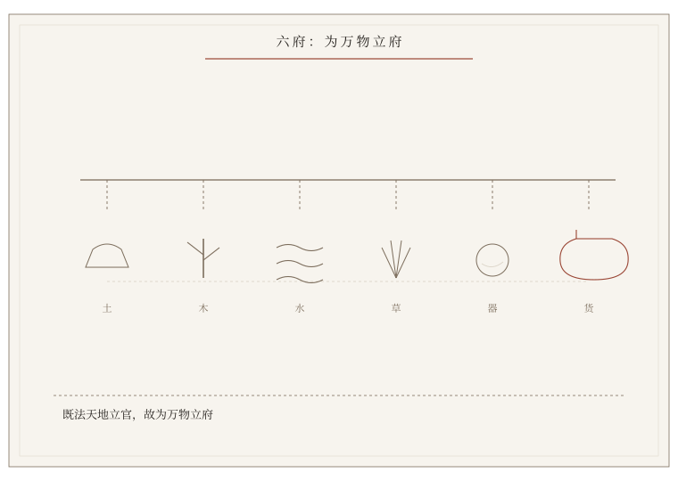

曲礼下 · 二·四十六 · 第 169 课
天子之六府：司土、司木、司水、司草、司器、司货，各主六职。注「府，主藏六物之税者……周则皆属司徒」。
说什么事：六府之名，及其于《周礼》所对应。
落在哪一层：礼。论万物之府。
为何编在此位：上节论五官（管人），此节论六府（管物）。
【经】天子之六府，曰司土、司木、司水、司草、司器、司貨，典司六職。
【注】府，主藏六物之稅者。此亦殷時制也，周則皆屬司徒。司士，土均也。司木，山虞也。司水，川衡也。司草，稻人也。司器，角人也。司貨，卝人也。
【疏】殷六卿外，复别立此六官也。府者，藏物之处也。既法天地立官，天地应生万物，故为万物立府也。司土一也，于周为土均也，均，平地税之政令也。土生万物，故为均也。司木二也，于周则为山虞也。虞，度也，主量度山之大小所生之物。司水三也，于周则为川衡。衡，平也，掌巡行川泽，平其禁令。司草四也，于周为稻人也，掌稼种下地及除草莱。司器五也，于周为卝人也，掌以时征齿角于山泽之农，供为器用也。司货六也，于周为丱人，言矿器未成者也，掌金玉锡石之地，而为之守禁，以时取之，以供器物。金玉曰货，故称货人。
府 注「主藏六物之税者」。疏「府者，藏物之处也」。
六物 土、木、水、草、器、货。
六职 六府所主之事。
土均 《周礼·地官》，均平地税之政令。
山虞、川衡 《周礼》掌山林川泽之官。虞，度也；衡，平也。
卝人 同「矿」。掌金玉锡石之地。
天子的六府是司土、司木、司水、司草、司器、司货，各主六种职事。
六府所管的，是地上之物的出处：土、木、水、草、器、货。疏说立此六官的理由极简：「既法天地立官，天地应生万物，故为万物立府也。」官制由此从人转向物。
第一层 府之为义 注「主藏六物之税者」。府不是仓库，是收税之所。所藏者是物之税，不是物。
第二层 六物之序 土、木、水、草在前，器、货在后。前者天然，后者经人。次序即是加工程度的次序。
第三层 周名之对 注逐一对应：司土为土均，司木为山虞，司水为川衡，司草为稻人，司器为角人，司货为卝人。六个名字换了，六件事没换。此节可作殷周官制对照表读。
第四层 金玉曰货 疏释司货最细：「金玉曰货，故称货人」。又说卝人「言矿器未成者」。一件东西从地里到器上，中间这一段，礼也立了官。
与今日何干 一个国家的部门表上，管土、管水、管矿的，往往最不起眼，也最难换。物的路径比人的路径长。
| 左 | 右 |
|---|---|
| 天子之六府 | 司土、司木、司水、司草、司器、司货 |
| 府 | 主藏六物之税 |
| 典司六职 | 各主其所掌之事 |
| 于周为土均、山虞、川衡 | 土、木、水 |
| 于周为稻人、角人、卝人 | 草、器、货 |
| 金玉曰货 | 故称货人 |
画一条自左向右的路径：左端一撮土块，次一株细木，次一道水纹，次一丛草，次一枚未成形的圆石（示矿），右端一只素器（圆腹小口）。六物等距排列，物与物之间以虚点连成一线；路径上方画一道横线（示「府」的收束），横线下六道短竖各落到一物之上。不写文字。赭色只用在右端那只素器的口沿。
